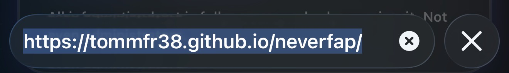
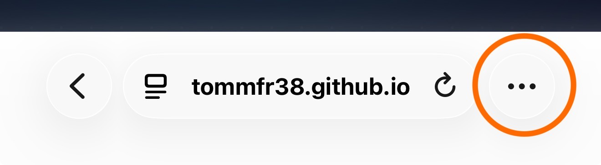
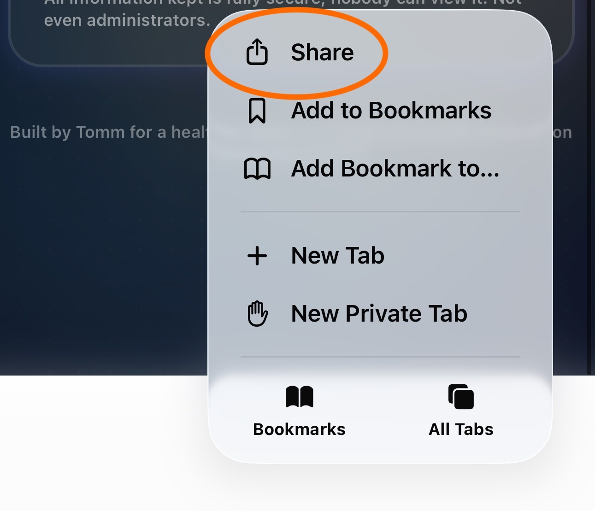
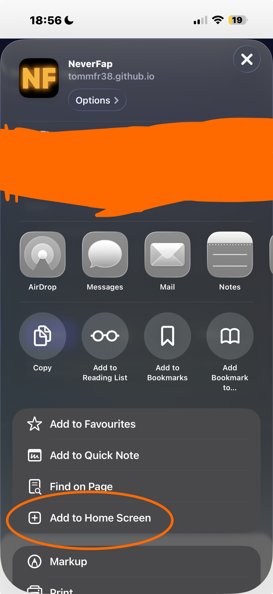
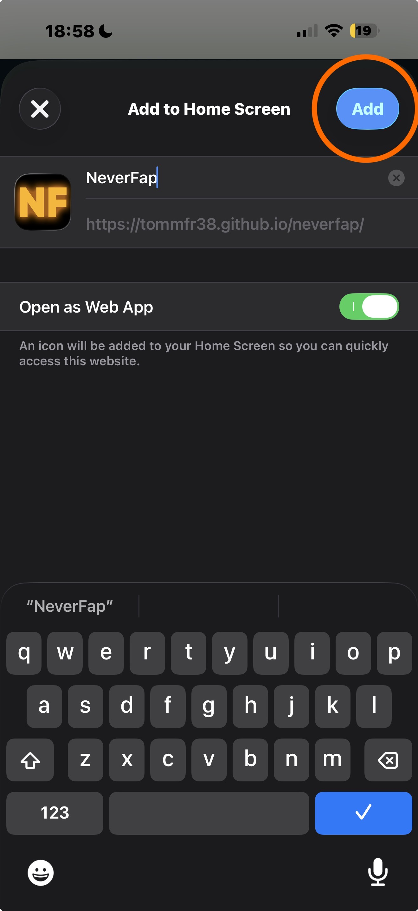
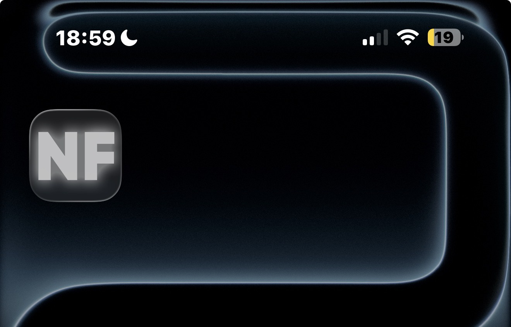

NeverFap on iOS
Use NeverFap on iPhone via Safari — no App Store required.
Search for NeverFap in Safari

Click the three-dots menu

Select Share

Select “Add to Home Screen”

Confirm and add

Launch from your Home Screen
